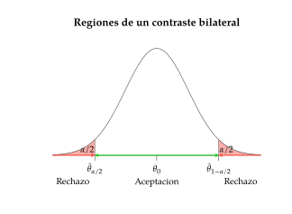
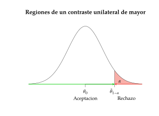
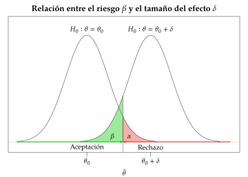
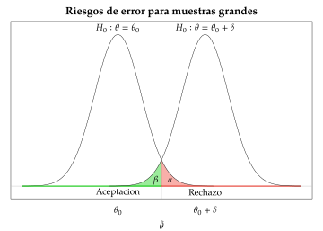

Contrastes de Hipótesis Hipótesis estadísticas y tipos de contrastes de hipótesis Hipótesis estadística En muchos estudios estadísticos, el objetivo, más que estimar el valor de un parámetro desconocido en la población, es comprobar la veracidad de una hipótesis formulada sobre la población objeto de estudio. El investigador, de acuerdo a su experiencia o a estudios previos, suele tener conjeturas sobre la población estudiada que expresa en forma de hipótesis. Definición - Hipótesis estadística. Una hipótesis estadística es cualquier afirmación o conjetura que determina, total o parcialmente, la distribución de una o varias variables de la población. Ejemplo. Para contrastar el rendimiento académico de un grupo de alumnos en una determinada asignatura, podríamos platear la hipótesis de si el porcentaje de aprobados es mayor del 50%. Contraste de hipótesis En general nunca se sabrá con absoluta certeza si una hipótesis estadística es cierta o falsa, ya que para ello habría que estudiar a todos los individuos de la población. Para comprobar la veracidad o falsedad de estas hipótesis hay que contrastarlas con los resultados empíricos obtenidos de las muestras. Si los resultados observados en las muestras coinciden, dentro del margen de error admisible debido al azar, con lo que cabría esperar en caso de que la hipótesis fuese cierta, la hipótesis se aceptará como verdadera, mientras que en caso contrario se rechazará como falsa y se buscarán nuevas hipótesis capaces de explicar los datos observados. Como las muestras se obtienen aleatoriamente, la decisión de aceptar o rechazar una hipótesis estadística se tomará sobre una base de probabilidad. La metodología que se encarga de contrastar la veracidad de las hipótesis estadísticas se conoce como contraste de hipótesis. Tipos de contrastes de hipótesis Contrastes de bondad de ajuste: El objetivo es comprobar una hipótesis sobre la forma de la distribución de la población. Ejemplo. Contrastar si las notas de un grupo de alumnos siguen una distribución normal. Contrastes de conformidad: El objetivo es comprobar una hipótesis sobre alguno de los parámetros de la población. Ejemplo. Contrastar si las nota media en un grupo de alumnos es igual a 5. Contrastes de homogeneidad : El objetivo es comparar dos poblaciones con respecto a alguno de sus parámetros. Ejemplo. Contrastar si el rendimiento de dos grupos de alumnos es el mismo comparando sus notas medias. Contrastes de independencia: El objetivo es comprobar si existe relación entre dos variables de la población. Ejemplo. Contrastar si existe relación entre la notas de dos asignaturas diferentes. Cuando las hipótesis se plantean sobre parámetros de la población, también se habla de contrastes paramétricos. Planteamiento de un contraste de hipótesis Hipótesis nula e hipótesis alternativa En la mayoría de los casos un contraste supone tomar una decisión entre dos hipótesis antagonistas: Hipótesis nula: Es la hipótesis conservadora, ya que se mantendrá mientras que los datos de las muestras no reflejen claramente su falsedad. Se representa como $H_0$. Hipótesis alternativa: Es la negación de la hipótesis nula y generalmente representa la afirmación que se pretende probar. Se representa como $H_1$. Ambas hipótesis se eligen de acuerdo con el principio de simplicidad científica: “Solamente se debe abandonar un modelo simple por otro más complejo cuando la evidencia a favor del último sea fuerte.” (Navaja de Occam) Elección de las hipótesis nula y alternativa Analogía con un juicio En el caso de un juicio, en el que el juez debe decidir si el acusado es culpable o inocente, la elección de hipótesis debería ser $$ \begin{align*} H_0: & \mbox{ Inocente}\newline H_1: & \mbox{ Culpable} \end{align*} $$ ya que la inocencia se asume, mientras que la culpabilidad hay que demostrarla. Según esto, el juez sólo aceptaría la hipótesis alternativa cuando hubiese pruebas significativas de la culpabilidad del acusado. El investigador jugaría el papel del fiscal, ya que su objetivo consistiría en intentar rechazar la hipótesis nula, es decir, demostrar culpabilidad del acusado. ¡Esta metodología siempre favorece a la hipótesis nula! Contrastes de hipótesis paramétricos En muchos contrastes, sobre todo en las pruebas de conformidad y de homogeneidad, las hipótesis se formulan sobre parámetros desconocidos de la población como puede ser una media, una varianza o una proporción. En tal caso, la hipótesis nula siempre asigna al parámetro un valor concreto, mientras que la alternativa suele ser una hipótesis abierta que, aunque opuesta a la hipótesis nula, no fija el valor del parámetro. Esto da lugar a tres tipos de contrastes: Bilateral Unilateral menor Unilateral mayor $H_0$: $\theta = \theta_0$ $H_0$: $\theta = \theta_0$ $H_0$: $\theta = \theta_0$ $H_1$: $\theta \neq \theta_0$ $H_1$: $\theta < \theta_0$ $H_1$: $\theta > \theta_0$ Elección del tipo de contraste Ejemplo. Supóngase que existen sospechas de que en una población hay menos hombres que mujeres. ¿Qué tipo de contraste debería plantearse para validar o refutar esta sospecha? Las sospechas se refieren al porcentaje o la proporción $p$ de hombres en la población, por lo que se trata de un contraste paramétrico. El objetivo es averiguar el valor de $p$, por lo que se trata de una prueba de conformidad. En la hipótesis nula el valor de $p$ se fijará a $0.5$ ya que, de acuerdo a las leyes de la genética, en la población debería haber la misma proporción de hombres que de mujeres. Finalmente, existen sospechas de que el porcentaje de hombres es menor que el de mujeres, por lo que la hipótesis alternativa será de menor $p<0.5$. Así pues, el contraste que debería plantearse es el siguiente: $$ \begin{align*} H_0: & p=0.5\newline H_1: & p<0.5 \end{align*} $$ Estadístico del contraste La aceptación o rechazo de la hipótesis nula depende, en última instancia, de lo que se observe en la muestra. La decisión se tomará según el valor que presente algún estadístico de la muestra relacionado con el parámetro o característica que se esté contrastando, y cuya distribución de probabilidad debe ser conocida suponiendo cierta la hipótesis nula y una vez fijado el tamaño de la muestra. Este estadístico recibe el nombre de estadístico del contraste. Para cada muestra, el estadístico dará una estimación a partir de la cual se tomará la decisión: si la estimación difiere demasiado del valor esperado bajo la hipótesis $H_0$, entonces se rechazará, y en caso contrario se aceptará. La lógica que guía la decisión es la de mantener la hipótesis nula a no ser que en la muestra haya pruebas contundentes de su falsedad. Siguiendo con el símil del juicio, se trataría de mantener la inocencia mientras no haya pruebas claras de culpabilidad. Ejemplo. Volviendo al ejemplo del contraste sobre la proporción de hombres de una población $$ \begin{align*} H_0: & p=0.5\newline H_1: & p<0.5 \end{align*} $$ Si para resolver el contraste se toma una muestra aleatoria de 10 personas, podría tomarse como estadístico del contraste $X$ el número de hombres en la muestra. Suponiendo cierta la hipótesis nula, el estadístico del contraste seguiría una distribución binomial $X\sim B(10,,0.5)$, de manera que el número esperado de hombres en la muestra sería 5. Así pues, es lógico aceptar la hipótesis nula si en la muestra se obtiene un número de hombres próximo a 5 y rechazarla cuando el número de hombres sea muy inferior a 5. Pero, ¿dónde poner el límite entre los valores $X$ que lleven a la aceptación y los que lleven al rechazo? Regiones de aceptación y de rechazo Una vez elegido el estadístico del contraste, lo siguiente es decidir para qué valores de este estadístico se decidirá aceptar la hipótesis nula y para que valores se rechazará. Esto divide del conjunto de valores posibles del estadístico en dos regiones: Región de aceptación: Es el conjunto de valores del estadístico del contraste a partir de los cuales se decidirá aceptar la hipótesis nula. Región de rechazo: Es el conjunto de valores del estadístico del contraste a partir de los cuales se decidirá rechazar la hipótesis nula, y por tanto, aceptar la hipótesis alternativa. Dependiendo de la dirección del contraste, la región de rechazo quedará a un lado u otro del valor esperado del estadístico del contraste según la hipótesis nula: Contraste bilateral $H_0:\ \theta=\theta_0$ $H_1:\ \theta\neq\theta_0$. Contraste unilateral de menor $H_0:\ \theta=\theta_0$ &H_1:\ \theta<\theta_0$. Contraste unilateral de mayor $H_0:\ \theta=\theta_0$ $H_1:\ \theta>\theta_0$. Ejemplo. Siguiendo con el ejemplo del contraste sobre la proporción de hombres de una población $$ \begin{align*} H_0: & p=0.5\newline H_1: & p<0.5 \end{align*} $$ Como el estadístico del contraste tenía una distribución binomial $X\sim B(10,,0.5)$ suponiendo cierta la hipótesis nula, su recorrido será de 0 a 10 y su valor esperado 5, por lo que, al tratarse de un contraste unilateral de menor, la región de rechazo quedará por debajo del 5. Pero, ¿dónde poner el límite entre las regiones de aceptación y de rechazo? Errores en un contraste de hipótesis Hemos visto que un contraste de hipótesis se realiza mediante una regla de decisión que permite aceptar o rechazar la hipótesis nula dependiendo del valor que tome el estadístico del contraste. Al final el contraste se resuelve tomando una decisión de acuerdo a esta regla. El problema es que nunca se conocerá con absoluta certeza la veracidad o falsedad de una hipótesis, de modo que al aceptarla o rechazarla es posible que se esté tomando una decisión equivocada. Los errores que se pueden cometer en un contraste de hipótesis son de dos tipos: Error de tipo I: Se comete cuando se rechaza la hipótesis nula siendo esta verdadera. Error de tipo II: Se comete cuando se acepta la hipótesis nula siendo esta falsa. $$ \begin{array}{|c|c|c|} \hline \mbox{Decisión} & H_0 \mbox{ cierta} & H_1 \mbox{ cierta}\newline \hline \mbox{Aceptar } H_0 & \color{green}{\mbox{Decisión correcta}} & \color{red}{\mbox{Error de tipo II}}\newline \hline \mbox{Rechazar }H_0 & \color{red}{\mbox{Error de tipo I}} & \color{green}{\mbox{Decisión correcta}}\newline \hline \end{array} $$ Riesgos de los errores de un contraste de hipótesis Los riesgos de cometer cada tipo de error se cuantifican mediante probabilidades: Definición - Riesgos $\alpha$ y $\beta$. En un contraste de hipótesis, se define el riesgo $\alpha$ como la máxima probabilidad de cometer un error de tipo I, es decir, $$P(\mbox{Rechazar }H_0|H_0) \leq \alpha,$$ y se define el riesgo $\beta$ como la máxima probabilidad de cometer un error de tipo II, es decir, $P(\mbox{Aceptar }H_0|H_1) \leq \beta.$$ Interpretación del riesgo $\alpha$ En principio, puesto que esta metodología favorece a la hipótesis nula, el error del tipo I suele ser más grave que el error del tipo II, y por tanto, el riesgo $\alpha$ suele fijarse a niveles bajos de $0.1$, $0.05$ o $0.01$, siendo $0.05$ lo más habitual. Debe tenerse cuidado al interpretar el riesgo $\alpha$ ya que se trata de una probabilidad condicionada a que la hipótesis nula sea cierta. Por tanto, cuando se rechace la hipótesis nula con un riesgo $\alpha=0.05$, es erróneo decir 5 de cada 100 veces nos equivocaremos, ya que esto sería cierto sólo si la hipótesis nula fuese siempre verdadera. Tampoco tiene sentido hablar de la probabilidad de haberse equivocado una vez tomada una decisión a partir de una muestra concreta, pues en tal caso, si se ha tomado la decisión acertada, la probabilidad de error es 0 y si se ha tomado la decisión equivocada, la probabilidad de error es 1. Determinación de las regiones de aceptación y de rechazo en función del riesgo $\alpha$ Una vez fijado el riesgo $\alpha$ que se está dispuesto a tolerar, es posible delimitar las regiones de aceptación y de rechazo para el estadístico del contraste de manera que la probabilidad acumulada en la región de rechazo sea $\alpha$, suponiendo cierta la hipótesis nula.   Ejemplo. Siguiendo con el contraste sobre la proporción de hombres de una población, como el estadístico del contraste sigue una distribución binomial $X\sim B(10,0.5)$, si se decide rechazar la hipótesis nula cuando en la muestra haya 2 o menos hombres, la probabilidad de cometer un error de tipo I será $$P(X\leq 2)= f(0)+f(1)+f(2)= 0.0010 + 0.0098 + 0.0439 = 0.0547.$$ Si riesgo máximo de error de tipo I que se está dispuesto a tolerar es $\alpha=0.05$, ¿qué valores del estadístico permitirán rechazar la hipótesis nula? $$P(X\leq 1)= f(0)+f(1) = 0.0010 + 0.0098 = 0.0107.$$ Es decir, sólo se podría rechazar la hipótesis nula con 0 o 1 hombres en la muestra. Riesgo $\beta$ y tamaño del efecto Aunque el error de tipo II pueda parecer menos grave, también interesa que el riesgo $\beta$ sea bajo, ya que de lo contrario será difícil rechazar la hipótesis nula (que es lo que se persigue la mayoría de las veces), aunque haya pruebas muy claras de su falsedad. El problema, en el caso de contrastes paramétricos, es que la hipótesis alternativa es una hipótesis abierta en la que no se fija el valor del parámetro a contrastar, de modo que, para poder calcular el riesgo $\beta$ es necesario fijar dicho valor. Lo normal es fijar el valor del parámetro del contraste a la mínima cantidad para admitir diferencias significativas desde un punto de vista práctico o clínico. Esa mínima diferencia que se considera clínicamente significativa se conoce como tamaño del efecto y se representa por $\delta$. Potencia de un contraste Puesto que el objetivo del investigador suele ser rechazar la hipótesis nula, a menudo, lo más interesante de un contraste es su capacidad para detectar la falsedad de la hipótesis nula cuando realmente hay diferencias mayores que $\delta$ entre el verdadero valor del parámetro y el que establece la hipótesis nula. Definición - Potencia de un contraste. La potencia de un contraste de hipótesis se define como $$\mbox{Potencia} = P(\mbox{Rechazar }H_0|H_1) = 1 - P(\mbox{Aceptar }H_0|H_1) = 1-\beta.$$ Así pues, al reducir el riesgo $\beta$ se aumentará la potencia del contraste. Un contraste poco potente no suele ser interesante ya que no permitirá rechazar la hipótesis nula aunque haya evidencias en su contra. Cálculo del riesgo $\beta$ y de la potencia $1-\beta$ Ejemplo Supóngase que en el contraste sobre la proporción de hombres no se considera importante una diferencia de menos de un 10% con respecto al valor que establece la hipótesis nula, es decir, $\delta=0.1$. Esto permite fijar la hipótesis alternativa $$H_1:\ p=0.5-0.1=0.4.$$ Suponiendo cierta esta hipótesis el estadístico del contraste seguiría una distribución binomial $X\sim B(10,,0.4)$. En tal caso, el riesgo $\beta$ para las regiones de aceptación y rechazo fijadas antes será $$\beta = P(\mbox{Aceptar }H_0|H_1) = P(X\geq 2) = 1 - P(X<2) = 1-0.0464 = 0.9536.$$ Como puede apreciarse, se trata de un riesgo $\beta$ muy alto, por lo que la potencia del contraste sería sólo de $$1-\beta = 1-0.9536 = 0.0464,$$ lo que indica que no se trataría de un buen contraste para detectar diferencias de un 10% en el valor del parámetro. Relación del riesgo $\beta$ y el tamaño del efecto $\delta$ El riesgo $\beta$ depende directamente de la mínima diferencia $\delta$ que se desea detectar con respecto al valor del parámetro que establece la hipótesis nula.  Ejemplo. Si en el contraste sobre la proporción de hombres se desease detectar una diferencia de al menos un 20% con respecto al valor que establece la hipótesis nula, es decir, $\delta=0.2$, entonces la hipótesis alternativa se fijaría a $$H_1:\ p=0.5-0.2=0.3,$$ y bajo esta hipótesis el estadístico del contraste seguiría una distribución binomial $X\sim B(10,,0.3)$. En tal caso, el riesgo $\beta$ para las regiones de aceptación y rechazo fijadas antes sería $$\beta = P(\mbox{Aceptar }H_0|H_1) = P(X\geq 2) = 1 - P(X<2) = 1-0.1493 = 0.8507,$$ por lo que el riesgo riesgo $\beta$ disminuiría y la potencia del contraste aumentaría $$1-\beta = 1-0.8507 = 0.1493,$$ aunque seguiría siendo un contraste poco potente. Relación entre los riesgos $\alpha$ y $\beta$ Los riesgos $\alpha$ y $\beta$ están enfrentados, es decir, cuando uno aumenta el otro disminuye y viceversa. Ejemplo. Si en el contraste sobre la proporción de hombres toma como riesgo $\alpha=0.1,$ entonces la región de rechazo sería $X\leq 2$ ya que, suponiendo cierta la hipótesis nula, $X\sim B(10,, 0.5)$, y $$P(X\leq 2) = 0.0547 \leq 0.1=\alpha.$$ Entonces, para una diferencia mínima $\delta=0.1$ y suponiendo cierta la hipótesis alternativa, $X\sim B(10,,0.4)$, el riesgo $\beta$ será $$\beta = P(\mbox{Aceptar }H_0|H_1) = P(X\geq 3) = 1- P(X<3) = 1-0.1673 = 0.8327,$$ y ahora la potencia ha subido hasta $$1-\beta = 1-0.8327 = 0.1673.$$ Relación de los riesgos de error y el tamaño muestral Los riesgos de error también dependen el tamaño de la muestra, ya que al aumentar el tamaño de la muestra, la dispersión del estadístico del contraste disminuye y con ello también lo hacen los riesgos de error.  Ejemplo. Si para realizar el contraste sobre la proporción de hombres se hubiese tomado una muestra de tamaño 100, en lugar de 10, entonces, bajo la suposición de certeza de la hipótesis nula, el estadístico del contraste seguiría una distribución binomial $B(100,,0.5)$, y ahora la región de rechazo sería $X\leq 41$, ya que $$P(X\leq 41) = 0.0443 \leq 0.05 =\alpha.$$ Entonces, para $\delta=0.1$ y suponiendo cierta la hipótesis alternativa, $X\sim B(100,,0.4)$, el riesgo $\beta$ sería $$\beta = P(\mbox{Aceptar }H_0|H_1) = P(X\geq 42) = 0.3775,$$ y ahora la potencia habría aumentado considerablemente $$1-\beta = 1-0.3775 = 0.6225.$$ Este contraste sería mucho más útil para detectar una diferencia de al menos un 10% con respecto al valor del parámetro que establece la hipótesis nula. Curva de potencia La potencia de un contraste depende del valor del parámetro que establezca la hipótesis alternativa y, por tanto, es una función de este $$\mbox{Potencia}(x)= P(\mbox{Rechazar }H_0|\theta=x).$$ Esta función da la probabilidad de rechazar la hipótesis nula para cada valor del parámetro y se conoce como curva de potencia. Cuando no se puede fijar el valor concreto del parámetro en la hipótesis alternativa, resulta útil representar esta curva para ver la bondad del contraste cuando no se rechaza la hipótesis nula. También es útil cuando sólo de dispone de un número determinado de individuos en la muestra, para ver si merece la pena hacer el estudio. Un contraste será mejor cuanto mayor sea el área encerrada por debajo de la curva de potencia. Ejemplo. La curva de potencia correspondiente al contraste sobre la proporción de hombres en la población es la siguiente $p$-valor de un contraste de hipótesis En general, siempre que la estimación del estadístico caiga dentro de la región de rechazo, rechazaremos la hipótesis nula, pero evidentemente, si dicha estimación se aleja bastante de la región de aceptación tendremos más confianza en el rechazo que si la estimación está cerca del límite entre las regiones de aceptación y rechazo. Por este motivo, al realizar un contraste, también se calcula la probabilidad de obtener una discrepancia mayor o igual a la observada entre la estimación del estadístico del contraste y su valor esperado según la hipótesis nula. Definición- $p$-valor. En un contraste de hipótesis, para cada estimación $x_0$ del estadístico del contraste $X$, dependiendo del tipo de contraste, se define el $p$-valor del contraste como $$ \begin{array}{lc} \mbox{Contraste bilateral}: & 2P(X\geq x_0|H_0)\newline \mbox{Contraste unilateral de menor}: & P(X\leq x_0|H_0)\newline \mbox{Contraste unilateral de mayor}: & P(X\geq x_0|H_0) \end{array} $$ En cierto modo, el $p$-valor expresa la confianza que se tiene al tomar la decisión de rechazar la hipótesis nula. Cuanto más próximo esté el $p$-valor a 1, mayor confianza existe al aceptar la hipótesis nula, y cuanto más próximo esté a 0, mayor confianza hay al rechazarla. Una vez fijado el riesgo $\alpha$, la regla de decisión para realizar un contraste también puede expresarse de la siguiente manera: Regla de decisión de un contraste $$ \begin{array}{ccc} \mbox{Si $p$-valor $\leq \alpha$} & \rightarrow & \mbox{Rechazar $H_0$}\newline \mbox{Si $p$-valor $> \alpha$} & \rightarrow & \mbox{Aceptar $H_0$}. \end{array} $$ De este modo, el $p$-valor nos da información de para qué niveles de significación puede rechazarse la hipótesis nula y para cuales no. Ejemplo. Si el contraste sobre la proporción de hombres se toma una muestra de tamaño 10 y se observa 1 hombre, entonces el $p$-valor, bajo a supuesta certeza de la hipótesis nula, $X\sim B(10,, 0.5)$, será $$p = P(X\leq 1)= 0.0107,$$ mientras que si en la muestra se observan 0 hombres, entonces el $p$-valor será $$p = P(X\leq 0)= 0.001.$$ En el primer caso se rechazaría la hipótesis nula para un riesgo $\alpha=0.05$, pero no podría rechazarse par un riesgo $\alpha=0.01$, mientas que en el segundo caso también se rechazaría para $\alpha=0.01$. Es evidente que en el segundo la decisión de rechazar la hipótesis nula se tomaría con mayor confianza. Pasos para la realización de un contraste de hipótesis Formular la hipótesis nula $H_0$ y la alternativa $H_1$. Fijar los riesgos $\alpha$ y $\beta$ deseados. Seleccionar el estadístico del contraste. Fijar la mínima diferencia clínicamente significativa (tamaño del efecto) $\delta$. Calcular el tamaño muestral necesario $n$. Delimitar las regiones de aceptación y rechazo. Tomar una muestra de tamaño $n$. Calcular el estadístico del contraste en la muestra. Rechazar la hipótesis nula si la estimación cae en la región de rechazo o bien si el $p$-valor es menor que el riesgo $\alpha$ y aceptarla en caso contrario. Contrastes paramétricos más importantes Pruebas de conformidad: Contraste para la media de una población normal con varianza conocida. Contraste para la media de una población normal con varianza desconocida. Contraste para la media de una población con varianza desconocida a partir de muestras grandes. Contraste para la varianza de una población normal. Contraste para un proporción de una población. Pruebas de homogeneidad: Contraste de comparación de medias de dos poblaciones normales con varianzas conocidas. Contraste de comparación de medias de dos poblaciones normales con varianzas desconocidas pero iguales. Contraste de comparación de medias de dos poblaciones normales con varianzas desconocidas y diferentes. Contraste de comparación de varianzas de dos poblaciones normales. Contraste de comparación de proporciones de dos poblaciones. Pruebas de conformidad Contraste para la media de una población normal con varianza conocida Sea $X$ una variable aleatoria que cumple las siguientes condiciones: Su distribución es normal $X\sim N(\mu,\sigma)$. La media $\mu$ es desconocida, pero su varianza $\sigma^2$ es conocida. Contraste: $$ \begin{aligned} H_0 &: \mu=\mu_0\newline H_1 &: \mu\neq \mu_0\end{aligned} $$ Estadístico del contraste: $$ \bar x\sim N\left(\mu_0,\frac{\sigma}{\sqrt{n}}\right) \Rightarrow Z=\frac{\bar x-\mu_0}{\sigma/\sqrt{n}}\sim N(0,1). $$ Región de aceptación: $z_{\alpha/2}< Z < z_{1-\alpha/2}$. Región de rechazo: $Z\leq z_{\alpha/2}$ y $Z\geq z_{1-\alpha/2}$. Contraste para la media de una población normal con varianza desconocida Sea $X$ una variable aleatoria que cumple las siguientes condiciones: Su distribución es normal $X\sim N(\mu,\sigma)$. Tanto su media $\mu$ como su varianza $\sigma^2$ son desconocidas. Contraste: $$ \begin{aligned} H_0 &: \mu=\mu_0\newline H_1 &: \mu\neq \mu_0\end{aligned} $$ Estadístico del contraste: Utilizando la cuasivarianza como estimador de la varianza poblacional se tiene $$ \bar x\sim N\left(\mu_0,\frac{\sigma}{\sqrt{n}}\right) \Rightarrow T=\frac{\bar x-\mu_0}{\hat s/\sqrt{n}}\sim T(n-1). $$ Región de aceptación: $t^{n-1}_{\alpha/2} < T < t^{n-1}_{1-\alpha/2}$. Región de rechazo: $T\leq t^{n-1}_{\alpha/2}$ y $T\geq t^{n-1}_{1-\alpha/2}$. Ejemplo. En un grupo de alumnos se quiere contrastar si la nota media de estadística es mayor que 5 puntos. Para ello se toma la siguiente muestra: 6.3, 5.4, 4.1, 5.0, 8.2, 7.6, 6.4, 5.6, 4.3, 5.2 El contraste que se plantea es $$H_0: \mu=5 \quad H_1: \mu>5$$ Para realizar el contraste se tiene: $\bar x = \frac{6.3+\cdots+5.2}{10}=\frac{58.1}{10}=5.81$ puntos. $\hat s^2 = \frac{(6.3-5.56)^2+\cdots+(5.2-5.56)^2}{9} = \frac{15.949}{9}=1.7721$ puntos$^2$, y $\hat s=1.3312$ puntos. Y el estadístico del contraste vale $$ T=\frac{\bar x-\mu_0}{\hat s/\sqrt{n}} = \frac{5.81-5}{1.3312/\sqrt{10}}= 1.9246. $$ El $p$-valor del contraste es $P(T(9)\geq 1.9246) = 0.04323$, lo que indica que se rechazaría la hipótesis nula para $\alpha=0.05$. La región de rechazo es $$ T=\frac{\bar x-5}{1.3312/\sqrt{10}} \geq t^9_{0.95} = 1.8331 \Leftrightarrow \bar x \geq 5+1.8331\frac{1.3312}{\sqrt 10} = 5.7717, $$ de modo que se rechazará la hipótesis nula siempre que la media de la muestra sea mayor que $5.7717$ y se aceptará en caso contrario. Suponiendo que en la práctica la mínima diferencia importante en la nota media fuese de un punto $\delta=1$, entonces bajo la hipótesis alternativa $H_1:\mu=6$, si se decidiese rechazar la hipótesis nula, el riesgo $\beta$ sería $$ \beta = P\left(T(9)\leq \frac{5.7717-6}{1.3312\sqrt 10}\right) = P(T(9)\leq -0.5424) = 0.3004, $$ de manera que la potencia del contraste para detectar una diferencia de $\delta=1$ punto sería $1-\beta=1-0.3004 = 0.6996$. Determinación del tamaño muestral en un contraste para la media Se ha visto que para un riesgo $\alpha$ la región de rechazo era $$ T=\frac{\bar x-\mu_0}{\hat s/\sqrt{n}} \geq t^{n-1}{1-\alpha} \approx z{1-\alpha}\quad \mbox{para } n\geq 30. $$ o lo que es equivalente $$ \bar x \geq \mu_0+z_{1-\alpha}\frac{\hat s}{\sqrt n}. $$ Si el tamaño del efecto es $\delta$, para una hipótesis alternativa $H_1:\mu=\mu_0+\delta$, el riesgo $\beta$ es $$ \beta = P\left(Z< \frac{\mu_0+z_{1-\alpha}\frac{\hat s}{\sqrt n}-(\mu_0+\delta)}{\frac{\hat s}{\sqrt n}} \right) = P\left(Z< \frac{z_{1-\alpha}\frac{\hat s}{\sqrt n}-\delta}{\frac{\hat s}{\sqrt n}} \right). $$ de modo que $$ z_\beta = \frac{z_{1-\alpha}\frac{\hat s}{\sqrt n}-\delta}{\frac{\hat s}{\sqrt n}} \Leftrightarrow \delta = (z_{1-\alpha}-z_\beta)\frac{\hat s}{\sqrt n} \Leftrightarrow n = (z_{1-\alpha}-z_\beta)^2\frac{\hat s^2}{\delta^2} = (z_\alpha+z_\beta)^2\frac{\hat s^2}{\delta^2}. $$ Ejemplo. Se ha visto en el ejemplo anterior que la potencia del contraste para detectar una diferencia en la nota media de 1 punto era del $69.96%$. Para aumentar la potencia del test hasta un $90%$, ¿cuántos alumnos habría que tomar en la muestra? Como se desea una potencia $1-\beta=0.9$, el riesgo $\beta=0.1$ y mirando en la tabla de la normal estándar se puede comprobar que $z_\beta = z_{0.1}=1.2816$. Aplicando la fórmula anterior para determinar el tamaño muestral necesario, se tiene $$ n = (z_\alpha+z_\beta)^2\frac{\hat s^2}{\delta^2} = (1.6449+1.2816)^2\frac{1.7721}{1^2} = 15.18, $$ de manera que habría que haber tomado al menos 16 alumnos. Contraste para la media de una población con varianza desconocida y muestras grandes $n\geq 30$ Sea $X$ una variable aleatoria que cumple las siguientes condiciones: Su distribución puede ser de cualquier tipo. Tanto su media $\mu$ como su varianza $\sigma^2$ son desconocidas. Contraste: $$ \begin{aligned} H_0 &: \mu=\mu_0\newline H_1 &: \mu\neq \mu_0 \end{aligned} $$ Estadístico del contraste: Utilizando la cuasivarianza como estimador de la varianza poblacional y gracias al teorema central del límite por tratarse de muestras grandes ($n\geq 30)$ se tiene $$ \bar x\sim N\left(\mu_0,\frac{\sigma}{\sqrt{n}}\right) \Rightarrow Z=\frac{\bar x-\mu_0}{\hat s/\sqrt{n}}\sim N(0,1). $$ Región de aceptación: $-z_{\alpha/2}< Z < z_{\alpha/2}$. Región de rechazo: $Z\leq -z_{\alpha/2}$ y $Z\geq z_{\alpha/2}$. Contraste para la varianza de una población normal Sea $X$ una variable aleatoria que cumple las siguientes hipótesis: Su distribución es normal $X\sim N(\mu,\sigma)$. Tanto su media $\mu$ como su varianza $\sigma^2$ son desconocidas. Contraste: $$ \begin{aligned} H_0 &: \sigma=\sigma_0\newline H_1 &: \sigma\neq \sigma_0 \end{aligned} $$ Estadístico del contraste: Partiendo de la cuasivarianza muestral como estimador de la varianza poblacional, se tiene $$ J=\frac{nS^2}{\sigma_0^2} = \frac{(n-1)\hat{S}^2}{\sigma_0^2}\sim \chi^2(n-1), $$ que sigue una distribución chi-cuadrado de $n-1$ grados de libertad. Región de aceptación: $\chi_{\alpha/2}^{n-1} < J < \chi_{1-\alpha/2}^{n-1}$. Región de rechazo: $J\leq \chi_{\alpha/2}^{n-1}$ y $J\geq \chi_{1-\alpha/2}^{n-1}$. Ejemplo. En un grupo de alumnos se quiere contrastar si la desviación típica de la nota es mayor de 1 punto. Para ello se toma la siguiente muestra: 6.3, 5.4, 4.1, 5.0, 8.2, 7.6, 6.4, 5.6, 4.3, 5.2 El contraste que se plantea es $$ H_0: \sigma=1 \quad H_1: \sigma>1 $$ Para realizar el contraste se tiene: $\bar x = \frac{6.3+\cdots+5.2}{10}=\frac{58.1}{10}=5.81$ puntos. $\hat s^2 = \frac{(6.3-5.56)^2+\cdots+(5.2-5.56)^2}{9} = \frac{15.949}{9}=1.7721$ puntos$^2$. El estadístico del contraste vale $$ J= \frac{(n-1)\hat{S}^2}{\sigma_0^2} = \frac{9\cdot1.7721}{1^2} = 15.949, $$ y el $p$-valor del contraste es $P(\chi(9)\geq 15.949) = 0.068$, por lo que no se puede rechazar la hipótesis nula para $\alpha=0.05$. Contraste para proporción de una población Sea $p$ la proporción de individuos de una población que tienen una determinada característica. Contraste: $$ \begin{aligned} H_0 &: p=p_0\newline H_1 &: p\neq p_0 \end{aligned} $$ Estadístico del contraste: La variable que mide el número de individuos con la característica en una muestra aleatoria de tamaño $n$ sigue una distribución binomial $X\sim B(n,p_0)$. De acuerdo al teorema central del límite, para muestras grandes ($np\geq 5$ y $n(1-p)\geq 5$), $X\sim N(np_0,\sqrt{np_0(1-p_0)})$, y se cumple $$ \hat{p}=\frac{X}{n} \sim N\left(p_0,\sqrt{\frac{p_0(1-p_0)}{n}}\right) \Rightarrow Z = \frac{\hat p-p_0}{\sqrt{p_0(1-p_0)/n}}\sim N(0,1). $$ Región de aceptación: $z_{\alpha/2}< Z < z_{1-\alpha/2}$. Región de rechazo: $Z\leq z_{\alpha/2}$ y $Z\geq z_{1-\alpha/2}$. Ejemplo. En un grupo de alumnos se desea estimar si el porcentaje de aprobados es mayor del $50%$. Para ello se toma una muestra de 80 alumnos entre los que hay 50 aprobados. El contraste que se plantea es $$ \begin{aligned} H_0 &: p=0.5\newline H_1 &: p>0.5 \end{aligned} $$ Para realizar el contraste se tiene que $\hat p= 50/80 = 0.625$ y como se cumple $n\hat p=80\cdot 0.625 = 50\geq 5$ y $n(1-\hat p)=80(1-0.625)=30\geq 5$, el estadístico del contraste vale $$ Z = \frac{\hat p-p_0}{\sqrt{p_0(1-p_0)/n}} = \frac{0.625-0.5}{\sqrt{0.5(1-0.5)/80}} = 2.2361. $$ y el $p$-valor del contraste es $P(Z\geq 2.2361)=0.0127$, por lo que se rechaza la hipótesis nula para $\alpha=0.05$ y se concluye que el porcentaje de aprobados es mayor de la mitad. Pruebas de homogeneidad Contraste de comparación de medias de dos poblaciones normales con varianzas conocidas Sean $X_1$ y $X_2$ dos variables aleatorias que cumplen las siguientes condiciones: Su distribución es normal $X_1\sim N(\mu_1,\sigma_1)$ $X_2\sim N(\mu_2,\sigma_2)$. Sus medias $\mu_1$ y $\mu_2$ son desconocidas, pero sus varianzas $\sigma^2_1$ y $\sigma^2_2$ son conocidas. Contraste: $$ \begin{aligned} H_0 &: \mu_1=\mu_2\newline H_1 &: \mu_1\neq \mu_2 \end{aligned} $$ Estadístico del contraste: $$ \left. \begin{array}{l} \bar{X}_1\sim N\left(\mu_1,\frac{\sigma_1}{\sqrt{n_1}} \right)\newline \bar{X}_2\sim N\left(\mu_2,\frac{\sigma_2}{\sqrt{n_2}} \right) \end{array} \right\} \Rightarrow $$ $$ \Rightarrow \bar{X}_1-\bar{X}_2 \sim N\left(\mu_1-\mu_2,\sqrt{\frac{\sigma^2_1}{n_1}+\frac{\sigma^2_2}{n_2}}\right) \Rightarrow Z= \frac{\bar{X}_1-\bar{X}_2}{\sqrt{\frac{\sigma^2_1}{n_1}+\frac{\sigma^2_2}{n_2}}}\sim N(0,1). $$ Región de aceptación: $-z_{\alpha/2}< Z < z_{\alpha/2}$. Región de rechazo: $Z\leq -z_{\alpha/2}$ y $Z\geq z_{\alpha/2}$. Contraste de comparación de medias de dos poblaciones normales con varianzas desconocidas e iguales Sean $X_1$ y $X_2$ dos variables aleatorias que cumplen las siguientes condiciones: Su distribución es normal $X_1\sim N(\mu_1,\sigma_1)$ y $X_2\sim N(\mu_2,\sigma_2)$. Sus medias $\mu_1$ y $\mu_2$ son desconocidas y sus varianzas también, pero son iguales $\sigma^2_1=\sigma^2_2=\sigma^2$. Contraste: $$ \begin{aligned} H_0 &: \mu_1=\mu_2\newline H_1 &: \mu_1\neq \mu_2 \end{aligned} $$ Estadístico del contraste: $$ \left. \begin{array}{l} \bar{X}_1-\bar{X}_2\sim N\left(\mu_1-\mu_2,\sigma\sqrt{\frac{n_1+n_2}{n_1n_2}} \right)\newline \displaystyle \frac{n_1S_1^2+n_2S_2^2}{\sigma^2} \sim \chi^2(n_1+n_2-2) \end{array} \right\} \Rightarrow T=\frac{\bar{X}_1-\bar{X}_2}{\hat{S}_p\sqrt{\frac{n_1+n_2}{n_1n_2}}} \sim T(n_1+n_2-2). $$ Región de aceptación: $-t_{\alpha/2}^{n_1+n_2-2} < T < t_{\alpha/2}^{n_1+n_2-2}$. Región de rechazo: $T\leq -t_{\alpha/2}^{n_1+n_2-2}$ y $T\geq t_{\alpha/2}^{n_1+n_2-2}$. Ejemplo. Se quiere comparar el rendimiento académico de dos grupos de alumnos, uno con 10 alumnos y otro con 12, que han seguido metodologías diferentes. Para ello se les realiza un examen y se obtienen las siguientes puntuaciones: $$ \begin{aligned} X_1 &: 4 - 6 - 8 - 7 - 7 - 6 - 5 - 2 - 5 - 3 \newline X_2 &: 8 - 9 - 5 - 3 - 8 - 7 - 8 - 6 - 8 - 7 - 5 - 7 \end{aligned} $$ El contraste que se plantea es $$ H_0: \mu_1=\mu_2\qquad H_1: \mu_1\neq \mu_2 $$ Para realizar el contraste, se tiene $\bar{X}_1 = \frac{4+\cdots +3}{10}=5.3$ puntos y $\bar{X}_2=\frac{8+\cdots +7}{12}=6.75$ puntos. $S_1^2= \frac{(4^2+\cdots + 3^2}{10}-5.3^2=3.21$ puntos$^2$ y $S_2^2= \frac{8^2+\cdots +3^2}{12}-6.75^2=2.69$ puntos$^2$. $\hat{S}_p^2 = \frac{10\cdot 3.21+12\cdot 2.6875}{10+12-2}= 3.2175$ puntos$^2$, y $\hat S_p=1.7937$. Si se suponen varianzas iguales, el estadístico del contraste vale $$ T=\frac{\bar{X}_1-\bar{X}_2}{\hat{S}_p\sqrt{\frac{n_1+n_2}{n_1n_2}}} = \frac{5.3-6.75}{1.7937\sqrt{\frac{10+12}{10\cdot 12}}} = -1.8879, $$ y el $p$-valor del contraste es $2P(T(20)\leq -1.8879) = 0.0736$, de modo que no se puede rechazar la hipótesis nula y se concluye que no hay diferencias significativas entre las notas medias de los grupos. Contraste de comparación de medias de dos poblaciones normales con varianzas desconocidas Sean $X_1$ y $X_2$ dos variables aleatorias que cumplen las siguientes condiciones: Su distribución es normal $X_1\sim N(\mu_1,\sigma_1)$ y $X_2\sim N(\mu_2,\sigma_2)$. Sus medias $\mu_1$, $\mu_2$ y varianzas $\sigma_1^2$, $\sigma_2^2$, son desconocidas, pero $\sigma^2_1\not = \sigma^2_2$. Contraste: $$ \begin{aligned} H_0 &: \mu_1=\mu_2\newline H_1 &: \mu_1\neq \mu_2 \end{aligned} $$ Estadístico del contraste: $$ T=\frac{(\bar{X}_1-\bar{X}_2)-(\mu_1-\mu_2)}{\sqrt{\frac{\hat{S}^2_1}{n_1}+\frac{\hat{S}^2_2}{n_2}}} \sim T(g), $$ con $g=n_1+n_2-2-\Delta$ y $$\Delta = \frac{(\frac{n_2-1}{n_1}\hat{S}_1^2-\frac{n_1-1}{n_2}\hat{S}_2^2)^2}{\frac{n_2-1}{n_1^2}\hat{S}_1^4+\frac{n_1-1}{n_2^2}\hat{S}_2^4}. $$ Región de aceptación: $-t_{\alpha/2}^{g} < T < t_{\alpha/2}^{g}$. Región de rechazo: $T\leq -t_{\alpha/2}^{g}$ y $T\geq t_{\alpha/2}^{g}$. Contraste de comparación de varianzas de dos poblaciones normales Sean $X_1$ y $X_2$ dos variables aleatorias que cumplen las siguientes condiciones: Su distribución es normal $X_1\sim N(\mu_1,\sigma_1)$ y $X_2\sim N(\mu_2,\sigma_2)$. Sus medias $\mu_1$, $\mu_2$ y varianzas $\sigma_1^2$, $\sigma_2^2$ son desconocidas. Contraste: $$ \begin{aligned} H_0 &: \sigma_1=\sigma_2\newline H_1 &: \sigma_1\neq \sigma_2 \end{aligned} $$ Estadístico del contraste: $$\left. \begin{array}{l} \displaystyle \frac{(n_1-1)\hat{S}_1^2}{\sigma_1^2}\sim \chi^2(n_1-1) \newline \displaystyle \frac{(n_2-1)\hat{S}_2^2}{\sigma_2^2}\sim \chi^2(n_2-1) \end{array} \right\} \Rightarrow F= \frac{\frac{\frac{(n_1-1)\hat{S}_1^2}{\sigma_1^2}}{n_1-1}}{\frac{\frac{(n_2-1)\hat{S}_2^2}{\sigma_2^2}}{n_2-1}} = \frac{\sigma_2^2}{\sigma_1^2}\frac{\hat{S}_1^2}{\hat{S}_2^2}\sim F(n_1-1,n_2-1). $$ Región de aceptación: $F_{\alpha/2}^{n_1-1,n_2-1} < F < F_{1-\alpha/2}^{n_1-1,n_2-1}$. Región de rechazo: $F\leq F_{\alpha/2}^{n_1-1,n_2-1}$ y $F\geq F_{1-\alpha/2}^{n_1-1,n_2-1}$. Ejemplo. Siguiendo con el ejemplo de las puntuaciones en dos grupos: $$ \begin{aligned} X_1 &: 4 - 6 - 8 - 7 - 7 - 6 - 5 - 2 - 5 - 3 \newline X_2 &: 8 - 9 - 5 - 3 - 8 - 7 - 8 - 6 - 8 - 7 - 5 - 7 \end{aligned} $$ Si se desea comparar las varianzas, el contraste que se plantea es $$ H_0: \sigma_1=\sigma_2\qquad H_1: \sigma_1\neq \sigma_2 $$ Para realizar el contraste, se tiene $\bar{X}_1 = \frac{4+\cdots +3}{10}=5.3$ puntos y $\bar{X}_2=\frac{8+\cdots +7}{12}=6.75$ puntos. $\hat{S}_1^2= \frac{(4-5.3)^2+\cdots + (3-5.3)^2}{9}=3.5667$ y $\hat{S}_2^2= \frac{(8-6.75)^2+\cdots + (3-6.75)^2}{11}=2.9318$ puntos$^2$. El estadístico del contraste vale $$ F = \frac{\hat{S}_1^2}{\hat{S}_2^2} = \frac{3.5667}{2.9318}=1.2165, $$ y el $p$-valor del contraste es $2P(F(9,11)\leq 1.2165)=0.7468$, por lo que se mantiene la hipótesis de igualdad de varianzas. Contraste de comparación de proporciones de dos poblaciones Sean $p_1$ y $p_2$ las respectivas proporciones de individuos que presentan una determinada característica en dos poblaciones. Contraste: $$ H_0: p_1=p_2\qquad H_1: p_1\neq p_2 $$ Estadístico del contraste: Las variables que miden el número de individuos con la característica en dos muestras aleatorias de tamaños $n_1$ y $n_2$ respectivamente, siguen distribuciones binomiales $X_1\sim B(n_1,p_1)$ y $X_2\sim B(n_2,p_2)$. Si las muestras son grandes ($n_ip_i\geq 5$ y $n_i(1-p_i)\geq 5$), de acuerdo al teorema central del límite, $X_1\sim N(np_1,\sqrt{np_1(1-p_1)})$ y $X_2\sim N(np_2,\sqrt{np_2(1-p_2)})$, y se cumple $$ \left. \begin{array}{l} \hat{p}_1=\frac{X_1}{n_1} \sim N\left(p_1,\sqrt{\frac{p_1(1-p_1)}{n_1}}\right)\newline \hat{p}_2=\frac{X_2}{n_2} \sim N\left(p_2,\sqrt{\frac{p_2(1-p_2)}{n_2}}\right) \end{array} \right\} \Rightarrow Z = \frac{\hat{p}_1-\hat{p_2}}{\sqrt{\frac{p_1(1-p_1)}{n_1}+\frac{p_2(1-p_2)}{n_2}}}\sim N(0,1) $$ Región de aceptación: $z_{\alpha/2}< Z < z_{1-\alpha/2}$. Región de rechazo: $z\leq z_{\alpha/2}$ y $z\geq z_{1-\alpha/2}$. Ejemplo. Se quiere comparar los porcentajes de aprobados en dos grupos que han seguido metodologías distintas. En el primer grupo han aprobado 24 alumnos de un total de 40, mientras que en el segundo han aprobado 48 de 60. El contraste que se plantea es $$ H_0: p_1=p_2\qquad H_1: p_1\neq p_2 $$ Para realizar el contraste, se tiene $\hat{p}_1=24/40= 0.6$ y $\hat{p}_2=48/60=0.8$, de manera que se cumplen las condiciones $n_1\hat{p}_1=40\cdot 0.6=24\geq 5$, $n_1(1-\hat{p}_1)=40(1-0.6)=26\geq 5$, $n_2\hat{p}_2=60\cdot 0.8=48\geq 5$ y $n_2(1-\hat{p}_2)=60(1-0.8)=12\geq 5$, y el estadístico del contraste vale $$ Z = \frac{\hat{p}_1-\hat{p_2}}{\sqrt{\frac{p_1(1-p_1)}{n_1}+\frac{p_2(1-p_2)}{n_2}}} = \frac{0.6-0.8}{\sqrt{\frac{0.6(1-0.6)}{40}+\frac{0.8(1-0.8)}{60}}} = -2.1483, $$ y el $p$-valor del contraste es $2P(Z\leq -2.1483)= 0.0317$, de manera que se rechaza la hipótesis nula para $\alpha=0.05$ y se concluye que hay diferencias. Realización de contrastes mediante intervalos de confianza Una interesante alternativa a la realización de un contraste $$ H_0: \theta=\theta_0\qquad H_1: \theta\neq \theta_0 $$ con un riesgo $\alpha$, es calcular el intervalo de confianza para $\theta$ con un nivel de confianza $1-\alpha$, ya que este intervalo se puede interpretar como el conjunto aceptable de hipótesis para $\theta$, de manera que si $\theta_0$ está fuera del intervalo, la hipótesis nula es poco creíble y puede rechazarse, mientras que si está dentro la hipótesis es creíble y se acepta. Cuando el contraste sea unilateral de menor, el contraste se realizaría comparando $\theta_0$ con el límite superior del intervalo de confianza para $\theta$ con un nivel de confianza $1-2\alpha$, mientras que si el contraste es unilateral de mayor, se comparará con el límite inferior del intervalo. Contraste Intervalo de confianza Decisión Bilateral $[l_i,l_s]$ con nivel de confianza $1-\alpha$ Rechazar $H_0$ si $\theta_0\not \in [l_i,l_s]$ Unilateral menor $[-\infty,l_s]$ con nivel de confianza $1-2\alpha$ Rechazar $H_0$ si $\theta_0\geq l_s$ Unilateral mayor $[l_i,\infty]$ con nivel de confianza $1-2\alpha$ Rechazar $H_0$ si $\theta_0\leq l_i$ Ejemplo. Volviendo al contraste para comparar el rendimiento académico de dos grupos de alumnos que han obtenido las siguientes puntuaciones: $$ \begin{aligned} X_1 &: 4 - 6 - 8 - 7 - 7 - 6 - 5 - 2 - 5 - 3 \newline X_2 &: 8 - 9 - 5 - 3 - 8 - 7 - 8 - 6 - 8 - 7 - 5 - 7 \end{aligned} $$ El contraste que se planteaba era $$ H_0: \mu_1=\mu_2\qquad H_1: \mu_1\neq \mu_2 $$ Como se trata de un contraste bilateral, el intervalo de confianza para la diferencia de medias $\mu_1-\mu_2$ con nivel de confianza $1-\alpha=0.95$, suponiendo varianzas iguales, vale $[-3.0521, 0.1521]$ puntos. Y como según la hipótesis nula $\mu_1-\mu_2=0$, y el 0 cae dentro del intervalo, se acepta la hipótesis nula. La ventaja del intervalo es que, además de permitirnos realizar el contraste, nos da una idea de la magnitud de la diferencia entre las medias de los grupos. Contrastes de Hipótesis Contrastes de Hipótesis Paramétricos Anterior Probabilidad